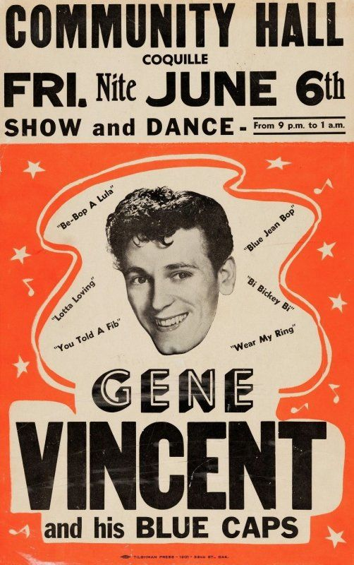
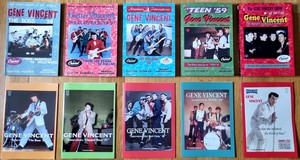
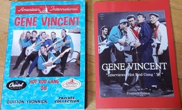

Actus

Nouveau poster de Gene Vincent disponible sur le stand de Michel Morley et Pierre Maman dans vos prochain concert.

GENE VINCENT Crazy Times - Tome 1: 50s Auteurs: Thierry Liesenfeld et Garrett McLean Editeur: SAPHYR Association / Production: Kalohé Production 352 pages, avec plus de 1000 documents Contact: Saphyr Association, 3 rue de l'Eglise, F-67530 KLINGENTHAL Mails: thierry.liesenfeld@gmail.com / Portable: 06 27 13 31 08 (messagerie) Prix (France): 50 € + 12 € de port = 62 € Règlement: chèque (à l'ordre de Saphyr Association) ou par virement Ce livre retrace les parcours, dans les années 1950, de Gene Vincent, artiste rebelle et écorché vif, accompagné des Blue Caps. L'iconographie est toujours soignée, avec de nombreux documents rares ou inédits. Sont inclus les sessiongraphie, discographie mondiale, TV-graphie, filmographie, Gene Vincent dans les charts, liste des concerts et autres événements jusqu'au 31 décembre 1959. Il sera suivi d'un tome II dédié aux années 1960.

Livres sur Gene Vincent écrit par Yvonnick Guitton Full Dimensional & Spectacular documents Couverture The Boss 56 Couverture TheClapper Boys 57 Couverture Hot Rod Gang Couverture With Jerry Merritt Couverture The Knight in Black Lather Couverture Email pour commander Tel 07.66.57.15.12

Livre sur Gene Vincent écrit par Yvonnick Guitton Email pour commander Tel 07.66.57.15.12